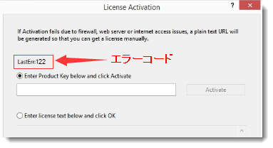

FAQ-1090 Originをアクティブ化すると、LastErr:1、LastErr:122、LastErr:401が表示されるのはなぜですか？
Licensing-Error-Codes
最終更新日：2023/10/10
Originをアクティブ化すると、エラーコードLastErr:1、LastErr:122、LastErr:401が表示される場合
- 
この問題を解決するには、
- まず、Originのプログラムフォルダとユーザファイルフォルダ（メニューの ヘルプ：フォルダを開く で開くことができます）がクラウド（OneDrive、Dropbox、Google Driveなど）に設定されているかどうかを確認してください。その場合は、ローカルに移動してください。
Note：ユーザファイルフォルダを変更する手順については、このページを参照してください。
- 上記2つのフォルダがローカルにある場合は、次の解決策を試してください。
- Originが起動していたら、閉じます。
- Windowsから
C:\ProgramData\OriginLabフォルダを参照します。
- LicenseサブフォルダとRegid.licファイルを削除します。
- Originのアイコンを右クリックして管理者として実行を選択し、Originを管理者として起動します。
- ライセンスのアクティベーションダイアログが開きます。プロダクトキーを入力し、アクティブ化をクリックしてライセンス認証を行います。
Note：Originを正常にアクティブ化した後、管理者としてOriginを実行する必要はありません。
- 上記の方法で解決しない場合は、Originをアンインストールして再インストールし、再度アクティブ化してみてください。
ライセンスエラーコードについての詳細は、このページを参照してください。
キーワード：ライセンス, エラーコード, LastErr 1, LastErr 122, LE, ラーニングエディション, learning version, 401